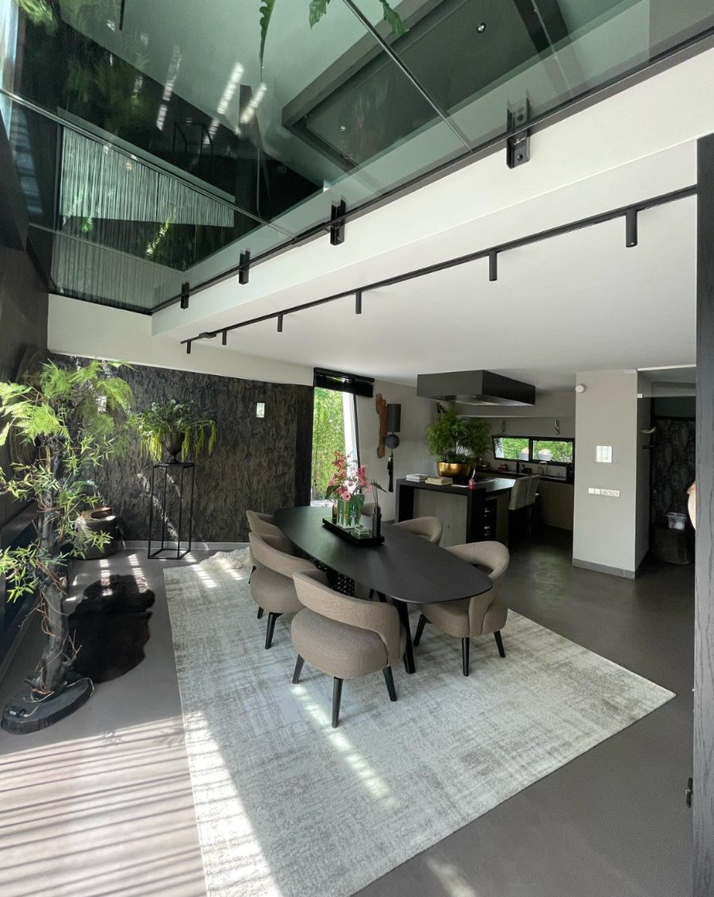
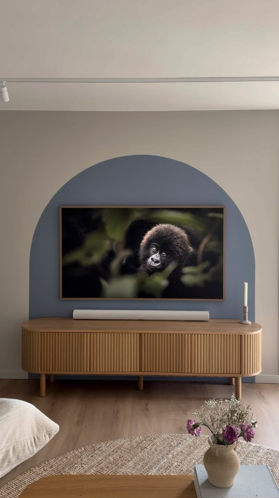
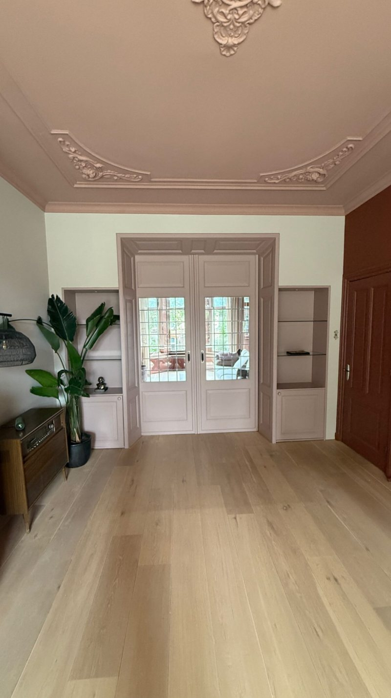
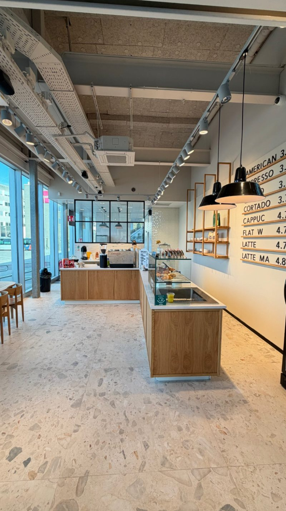
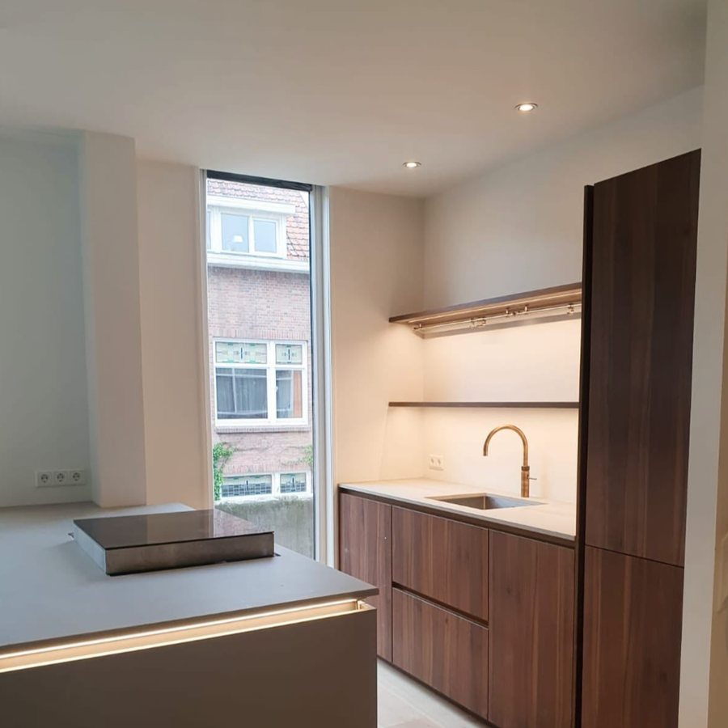
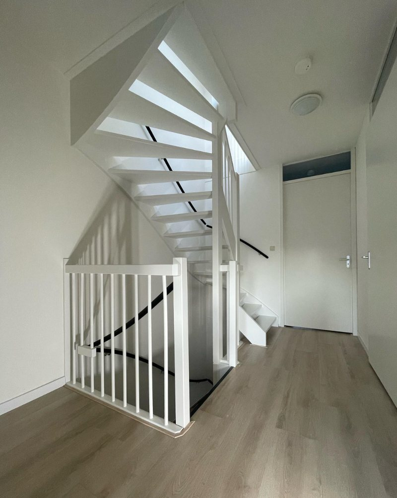
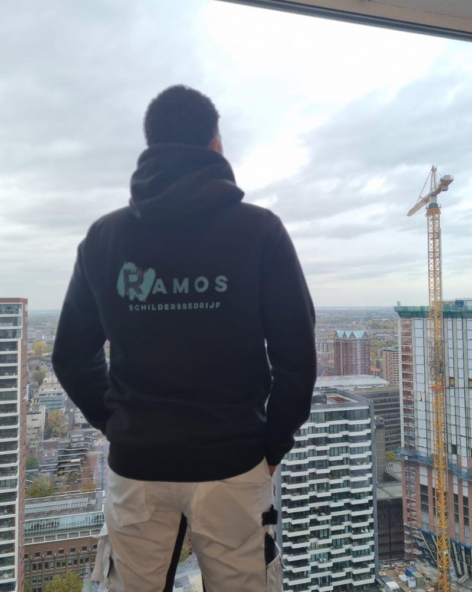

Binnenschilderwerk
Wanden en plafonds in een egale, nette afwerking, bijvoorbeeld in RAL 9010 of een kleur naar keuze.
Schildersbedrijf Ramos verzorgt binnenschilderwerk, plafonds, trappen en afwerking voor woningen, horeca en vastgoed. Actief in Rotterdam, Den Haag en Breda, met oog voor detail en een nette oplevering.

Project in hartje RotterdamAlles wat bij een strakke afwerking hoort, uitgevoerd door één schildersbedrijf.
Wanden en plafonds in een egale, nette afwerking, bijvoorbeeld in RAL 9010 of een kleur naar keuze.
Een nieuw laagje verf verandert de look van een trap volledig. Van trap en leuning tot trapgat.
Lekkageplekken worden geïsoleerd en netjes weggewerkt, zodat u er niets meer van ziet.
Primelaag, naden dichtkitten en stuc- of structuurafwerking, voor een strak eindresultaat.
Schilderwerk voor café's en andere zaken, zoals Beans & Batters en Boutique café Dalia.
Samen met interieurstylisten een kleurkeuze realiseren, zoals een bohemian boog in blauwgrijs.

Voor dit project koos de opdrachtgever samen met een interieurstyliste voor een warme, bohemian uitstraling. De organische boog in een stijlvolle blauwgrijze tint vormt de blikvanger van de woonkamer. Ramos Schildersbedrijf voerde het ontwerp uit.
Een selectie uit het eigen Instagram-kanaal van Schildersbedrijf Ramos.




Wij dekken vloeren en trappen af en leveren op wat is afgesproken.
Vertel wat u wilt laten schilderen en stuur eventueel foto's via WhatsApp.
U ontvangt een offerte en we kijken samen naar kleur en afwerking.
Voorbereiden, schilderen en opleveren, met oog voor detail.

Schildersbedrijf Ramos werkt vooral in Rotterdam en Den Haag en heeft ook projecten in Breda opgeleverd. Twijfelt u of uw adres binnen het werkgebied valt? Stuur gerust een berichtje.
De snelste manier is een berichtje via WhatsApp. Foto's van de ruimte helpen om snel te kunnen reageren.